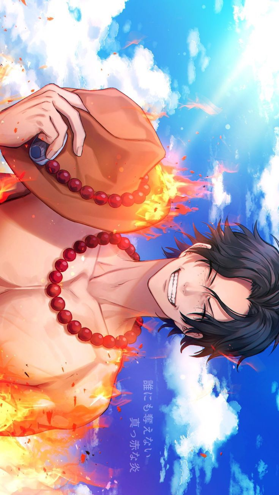
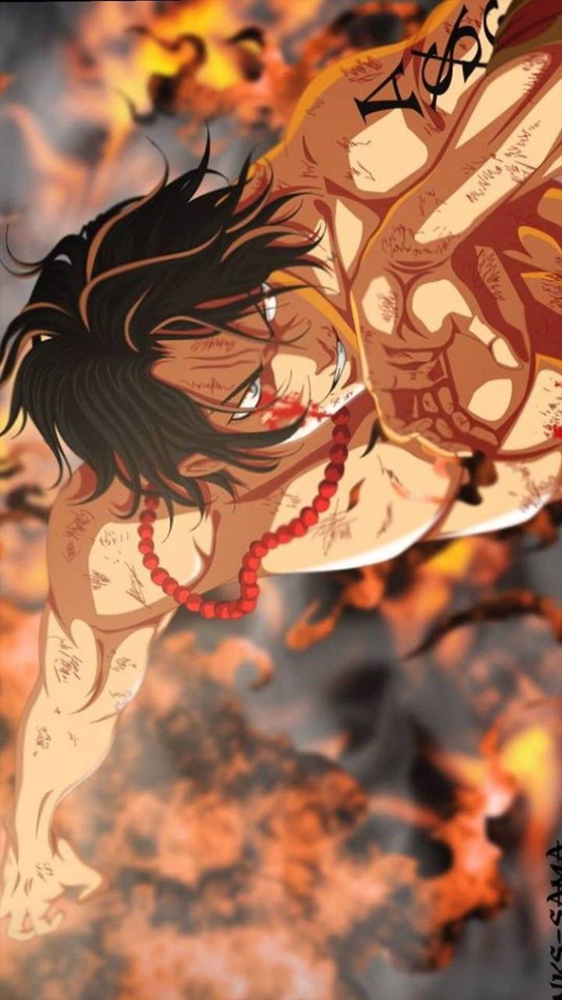
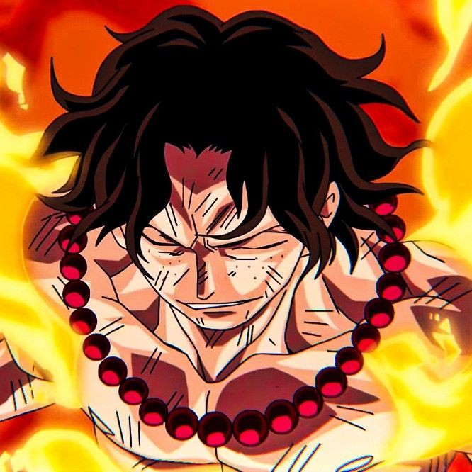
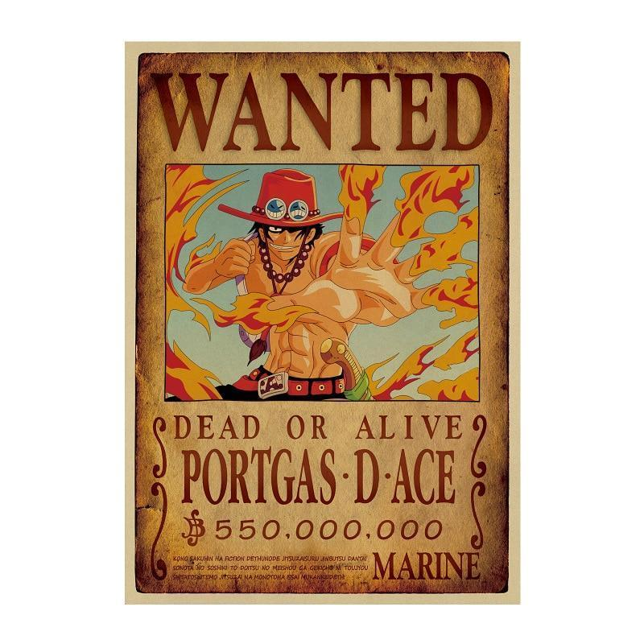
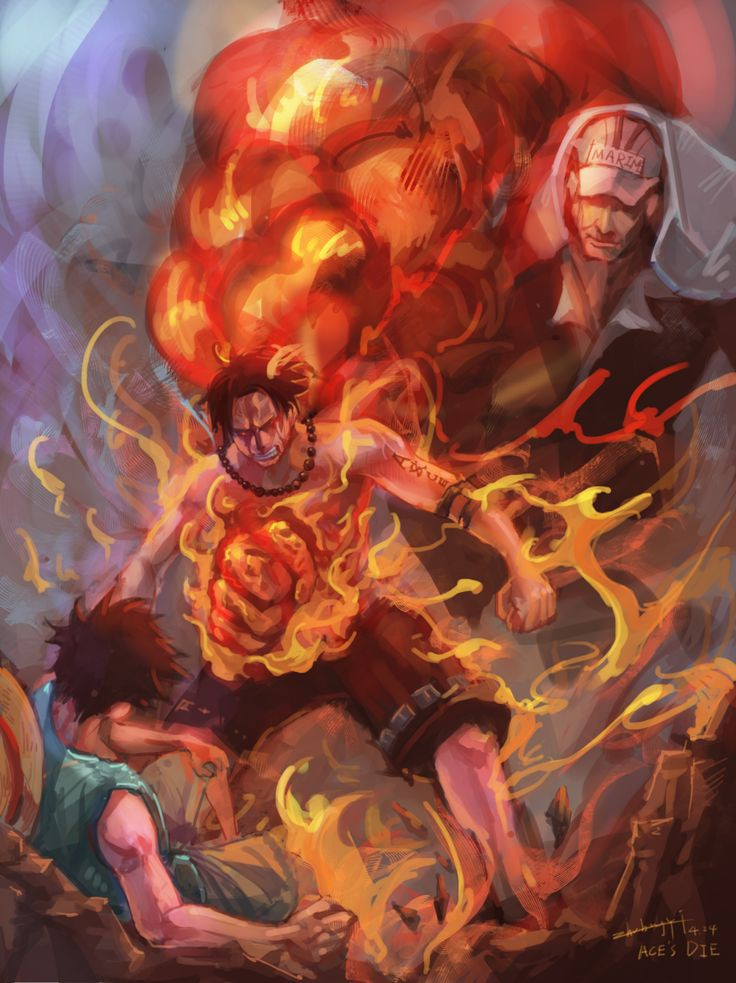

About:
- His Past
- Personality
- Occupation
- Skills
- Life achivements
- Death
My hero.

Portgas D Ace
PAST:
After his father's execution and his mother's death during the childbirth, Ace was taken under Monkey D. Garp's wing as his grandson.
He was raised with the mount bandits to become a pirate instead of a marine like Garp.
He was trained with his adoptive brothers Monkey D. Luffy and Sabo.
At age 17, Ace began his pirating actions as captain of the Spade Pirates.
He became infamous and even refusing to become a Shichibukai.
He fought Jimbei for five days and nearly killed other until Whitebeard arrive to fight Ace and defeated by the Strongest man in the world.
Later, he became the 2nd division commander of the Whitebeard Pirates.
Until one day, one of his subordinates, Marshall D. Teach (also known as Blackbeard) killed the 4th division commander Thatch and took Yami Yami no Mi.
Ace went to look for Blackbeard to avange Thatch but he got defeated by him and was turned in to the Marine.
PERSONALITY:
Ace was a intelligent, polite and caring man.
He looked after luffy like he was his younger brother.We see him standing up for Luffy and teaching him how to survive as they grew up.
Ace's basic combat skills were quite formidable even without his Devil Fruit powers. Aside from the powers granted by the Devil Fruit he consumed, Ace possessed immense physical strength
In addition, Ace liked to party as much as his adoptive little brother does. When he boarded Buggy's ship, he was drawn by the smell of food and decided to enjoy himself.
As the son of Roger, he lived in his shadow and is to date the first D. depicted to truly question his own right to exist, while displaying the fewest commonly seen D. related traits.
Ace seemed to have lifelong problems dealing with his parentage, even after denouncing Gol D. Roger and accepting Whitebeard as his only father
Ace's favorite food is ghost pepper spaghetti aglio
SKILLS:
- Mera Mera no Mi (Flare Flare Fruit in Funimation Sub, Flame Flame Fruit Funimation Dub)
- Fire Manipulation
- Elemental IntangibilityHaki
- Superhuman Strength
- Stamina
- Durability


OCCUPATION:
- Pirate
- Captain of the Spade Pirates (formerly)
- 2nd Division Commander of the Whitebeard Pirates
ACHIVEMENTS
- Ace ate the Mera Mera no Mi fruit(fire fire)
- Captain of the Spade pirates
- He was the commander of the 2nd division of Whitebeard pirates
- Ace is the first known Devil Fruit user to die at the paramount war.
- His bounty, being at 550,000,000.
wanted poster of Portgas D Ace:

DEATH
Ace chasing Teach to kill him to avenge Thatch until ended into a failure and got imprisoned to Impel Down Level 6 with Jinbe and his public execution in Marineford was announced.
However, Luffy arrived with powerful impel down escapees to Marineford to rescue him.
This led to one of the greatest battles in history. they called it the War of the Paramount : The navy vs the Pirates.
Although being freed, he sacrificed his own life to save Luffy's life and died with his inner organis burnt by Akainu.
Akainu ate a Fruit that let him control magma, much stronger than Ace's Fruit powers over fire.
Thanks to Shanks' aid, Ace and Whitebeard are laid to rest back near Whitebeard's home island, with Ace's grave set up next to Whitebeard's and adorned with his hat, dagger, and other effects.
Whitebeard's crew, along with Shanks and his crew, lay flowers, weapons, and other memorials on the tomb to honor their fallen crewmate and captain.
How Ace died :

To know more about Ace and his life:
More about Ace